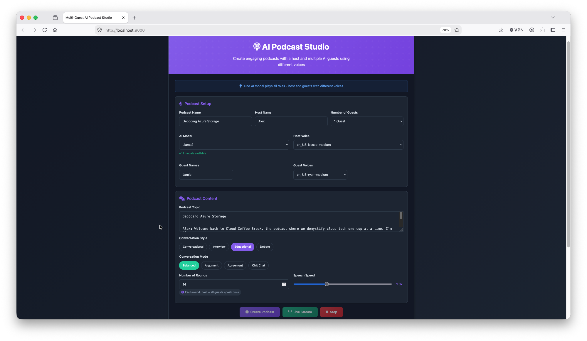

Podcast Studio
The assignment was to study for DP-900. This happened instead.
The actual task
The brief, from the school's LMS, was "Azure's Data Puzzle": understand why Azure offers several services that look similar at first glance, by directly comparing their capabilities and use cases rather than studying each one in isolation. Groups were split by topic and asked to explain their assigned services to the rest of the class via a short podcast (under 10 minutes) — in my case, the Storage group: Azure Storage, Blob Storage, OneLake, Files, Tables, and Cosmos DB.
Somewhere between "record a podcast" and "actually record a podcast," this turned into a fully local, AI-generated production pipeline instead — two AI hosts, a local LLM writing dialogue, and text-to-speech doing the voices.
Credit where it's due
The starting pipeline was cloned from Laszlobeer/AI-podcast, before all the debugging below. My colleague Andreas built a genuinely excellent version of this same idea in parallel — podcast-foundry, using Kokoro-TTS and XTTS voice cloning, for his group's Processing & Analytics topics. Seeing his approach work cleanly is a big part of what kept me digging rather than giving up when my own build hit a wall. Parts of the debugging below were also worked through with the help of an AI assistant — same as the AIY kit troubleshooting, treated the same way I'd ask a colleague when I hit something unfamiliar.
Setup, before things went sideways
- Created a project directory, initialized a GitHub repo azure-podcast
- Downloaded/cloned an AI podcast pipeline repo as a starting point
- Installed most Python packages, pulled
llama2into Ollama, got Ollama running
Where it broke: the Piper architecture mismatch
This was the real saga of the project:
- Downloaded a Piper release archive labeled
piper_macos_aarch64— advertised as native Apple Silicon. - But the actual
piperbinary inside it was compiled as x86_64 (confirmed withfile piper/piper→Mach-O 64-bit executable x86_64) — the archive's label didn't match its contents, or the wrong asset got grabbed from a releases page listing multiple architectures. - Because of that mismatch, it had to run via
arch -x86_64(Rosetta), which then needed an x86_64libespeak-ng.1.dylib— but the system'sespeak-ngwas arm64-only → crash (incompatible architecture). - Chasing that error, tried cloning
rhasspy/piperfresh and runningcargo build --release— except that project isn't Rust-based, so Cargo was never going to work there. - Meanwhile,
pip install piper-ttshad also been run separately — the modern, actively maintained, native-ARM64 Python package. This was the right tool the whole time, just competing with the broken binary for which one actually ran.
file <binary> before assuming it matches your machine, especially with Apple Silicon vs. Intel binaries floating around in the wild.The actual fix
- Stopped using the mismatched-architecture binary entirely
- Confirmed the venv's
pip/pythonwere correct, butwhich piperstill showed the wrong path — turned out to be zsh's stale command hash cache, fixed withhash -r - After that,
pipercorrectly resolved to the ARM64piper-ttsinstall in the venv - Downloaded a proper voice model (
.onnx+.onnx.json) and confirmed Piper worked standalone (test.wavplayed correctly)
Remaining gaps, fixed in order
- Missing
flask→ installed - Missing
ffmpeg(blocked MP3 export) → installed viabrew - Only one voice model → added a second so both hosts sound distinct
End state
Flask app running on localhost:9000, Piper TTS working, Ollama serving llama2, MP3 export enabled — the Podcast Studio UI loads and works.

Screenshot of the working Podcast Studio UI, showing two AI hosts and a topic input field.Round two: getting from "it runs" to "it actually sounds right"
Piper working standalone turned out to be the easy 10% of the problem. Once the full pipeline was running end to end, an entirely new set of bugs showed up — each one funnier than the last.
The one where every line just said "quiet"
The big one. Every single TTS turn, regardless of the actual script text, produced only the spoken word "quiet." The cause: the code appended a --quiet flag to the Piper command —
cmd.append("--quiet")— except that flag doesn't exist in the currently installed piper-tts (piper1-gpl) CLI at all (confirmed via piper --help). It's a leftover from the old rhasspy/piper project, which the maintained fork doesn't support. Instead of erroring out, the CLI apparently just consumed --quiet as literal input text, overriding whatever was actually piped in via stdin — so the AI hosts spent a while saying nothing but "quiet," over and over, with complete confidence. Deleting that one line fixed it entirely.
Duplicated turns, traced to a hardcoded `None`
Consecutive turns sometimes produced the exact same text verbatim, even with different voices assigned. The streaming generation route was hardcoding the "previous message" argument to None on every single call — meaning from turn 1 onward, the model was being told "the previous speaker said: 'None'", every turn, forever. Combined with a weaker model, it would sometimes just fall back to repeating an earlier line. Fixed by tracking real conversation history and passing the actual previous turn's text into the prompt instead.
Hosts reading their own name out loud
Generated text sometimes kept the literal speaker label baked in — "Alex: Hey there, welcome back..." — which Piper then read aloud verbatim, including the name and the colon. Fixed with a small prefix-stripper checking for the current speaker's own name at the start of the line, in addition to the existing generic "Host:"/"Guest:" stripper.
Emojis, mispronounced
Occasional emojis in the generated dialogue (😅, ☕️, 😊) got passed straight to Piper's espeak-ng phonemizer backend, which dutifully tried to pronounce them — producing odd noises rather than skipping them. Fixed with a regex stripping emoji ranges before text reaches the TTS call.
llama2 losing track of who's speaking
Even after the fixes above, the model would occasionally forget whose turn it was and generate the wrong speaker's line entirely — not just repeating, but producing a fresh "Alex intro" during what should have been Jamie's response. This wasn't a prompt-engineering problem so much as a model-capability one: llama2 (7B, older generation) is comparatively weak at holding persona/role consistency across a longer multi-turn generation. Switching to llama3.1 in Ollama resolved it completely — a full 6-turn test run produced coherent, on-topic, correctly-attributed dialogue moving cleanly through Blob Storage → Azure Files → Table Storage → Cosmos DB.
Recurring conversation loops, even with llama3.1
After several genuinely good, on-topic turns, the model would sometimes lock onto one sentence and repeat it verbatim for 10+ consecutive turns, then randomly break free — only to loop again later on a different line. The cause was a self-reinforcing feedback loop: once the model outputs the same sentence twice, that sentence becomes part of both the "previous message" and Ollama's running context. Being fed the same "previous line" tends to produce the same response again, and each repeat deepens the loop.
A fuzzy text-similarity guard was tried first (flagging a new line as too close to a recent one) and abandoned — legitimately different sentences about the same topic often share enough vocabulary to score as "similar," and tuning the threshold reliably wasn't practical under time pressure. What actually stuck: an exact-duplicate check instead of a fuzzy one, which only triggers on true verbatim repeats — effectively zero false positives. On detection, the turn regenerates once with an explicit "don't repeat yourself" instruction; if it loops again anyway, the episode ends cleanly instead of grinding on for the remaining turns.
Being honest about how this actually went
It's worth being blunt here rather than smoothing this into a tidy story either way. A significant chunk of the debugging time above — sections on topic drift, duplicated turns, role confusion, and the repetition loops — went into patching an increasingly elaborate custom prompt layer: role instructions, rewrite steps, per-turn framing, speaker-label stripping. That layer is what kept breaking, in ways that looked at first like the model itself being unreliable.
The actual test came later: stripping all of that custom framing away entirely, and passing llama3.1 nothing but the plain topic. That version worked — genuinely well, better than anything the heavily-engineered prompt chain had produced. Which reframes the lesson: this wasn't really "small local models can't hold coherent multi-speaker dialogue." It was closer to "the elaborate scaffolding built on top of the model was itself fighting the model," and most of the failure modes in this log were downstream of that scaffolding, not of the underlying LLM call.
Worth being honest about the hours this cost either way: several of them went into patching problems that turned out to disappear once the custom prompt layer was simplified rather than further patched. The lesson isn't "never use an LLM here" — it's "when a heavily-engineered prompt keeps producing bad output, try removing complexity before adding more of it."
What actually shipped: two working results, not one replacing the other
Both approaches now produce a genuinely usable final episode, sitting side by side in the repo:
- A fixed, pre-written script fed straight to Piper with no LLM at all — fully deterministic, zero risk of drift or repetition, and exactly what the group's reviewed script says, word for word.
- A minimal-prompt LLM-generated episode —
llama3.1given just the topic, no custom framing on top, producing a coherent, on-topic conversation about Azure Storage services on its own.
Neither one "won." The fixed script guarantees exact, reviewed content — appropriate when the words already matter and are already decided. The minimal-prompt LLM version shows that, once the custom scaffolding stopped getting in its own way, the model was capable of a good result without needing to be micromanaged into one.
Where it stands now
Both final episodes exist in the repo as finished MP3s . The full engineered pipeline (Flask app, Ollama, all the fixes above) stays in the repo as the record of what was actually learned — most of it about how much unnecessary complexity a prompt layer can quietly accumulate, and how often the fix is subtraction rather than another patch.